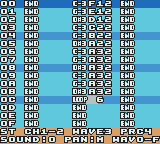
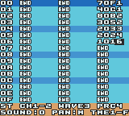
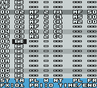

©2000-2001 Aleksi Eeben (email: aleksi@cncd.fi)
http://www.cncd.fi/aeeben
Startup/Options Screen Commands
Startup/Options Screen Buttons
Block Editor Buttons
Sound Editor Buttons
Block Order List Buttons
Block Commands
Multiple Songs in One Music Bank
How to Create Sounds?
Example Sound for CH1-2: Pulse Width Modulation, Envelopes
Example Sound for WAVE3: Arpeggios, Waveforms, Looping
Example Sound for PRC4: Percussive Sounds
Misc. Sound Tips
Carillon Editor Utility (PC)
Sound Manager
Using Carillon Player...
Known Bugs
Compatibility
It is recommended to run the editor on the actual Color Game Boy hardware only.
From version 1.1 and on the editor should also work on the old monochrome Game Boy and Game Boy Pocket. Due to smaller work RAM on these machines you can only use the first 16 blocks ($00-$0f) of the 48 ($00-$2f) available on CGB.
If you want to test the editor on an emulator you should try (V)GBC (by Rusty Wagner) or No$gmb(v2.5). No$gmb plays some highest notes on channel 3 wrong but runs very well even on older PC's. A third option would be REW but it cannot play samples and has some trouble with keeping the time.
Startup/Options Screen Commands
|
Mode Switching |
|
|
Block Editor |
Go to block editor |
|
Sound Editor |
Go to sound editor |
|
Block Order List |
Go to block order list |
|
Block Commands |
|
|
Copy to Buffer |
Copies the current block to copy buffer |
|
Copy from Buffer |
Replaces the current block with the contents of copy buffer |
|
Copy Ch from Buffer |
Replaces the current channel (or cmd-column) with the same channel in the copy buffer |
|
Transpose Up |
Transposes all notes one semitone up (Except C-0 which is reserved for "body" of drum sounds) |
|
Transpose Down |
Transposes all notes one semitone down (Except C-0) |
|
Swap Ch1 and Ch2 |
Swaps channels 1 and 2 (Usable when working with FX Hammer) |
|
Sound Commands |
|
|
Copy to Buffer |
Copies the current sound to copy buffer (In fact all 3 sounds sharing the same number are copied) |
|
Copy from Buffer |
Replaces the current sound with the same channel sound in the copy buffer |
|
Card Options |
|
|
Load from SRAM |
Loads all music data from card SRAM (Shortcut: hold the control pad left or right during POWER ON) |
|
Store in SRAM |
Stores all music data in card SRAM (All SRAM data is overwritten) |
Startup/Options Screen Buttons
|
Up/Down |
Move cursor |
|
Left/Right |
Jump to next or previous menu |
|
Start |
Execute command under cursor |
|
Select |
Go back to last edit screen |
|
Up/Down/Left/Right |
Scroll block / Move cursor |
|
A + Left/Right |
Edit note in semitone steps / Select command |
|
A + Up/Down |
Edit note in octave leaps / Edit command parameter |
|
A + Start (or B + Start) |
Enter sample or percussion note |
|
A + Select (or B + Select) |
Tie note / Change sound number of an existing note |
|
A + B |
Delete |
|
B + Left/Right |
Go to next/previous sound |
|
B + Up/Down |
Go to next/previous block |
|
Start |
Play block / Stop playing |
|
Down + Start |
Play and scroll the block while playing |
|
Up + Start |
Stop scrolling (without stopping the music) |
|
Left/Right + Start |
Play the current step only |
|
Left + Select |
Jump to start of block |
|
Right + Select |
Jump to middle of block |
|
Select |
Go to Options Screen |
(Tip: A + Left/Right remembers the last note entered if the current step is empty. A + Up uses "C-0" instead - For fast editing of 2 channel drum sounds always write the drum body to be played at "C-0".)
|
Up/Down/Left/Right |
Move cursor |
|
A + Up/Down |
Edit sound parameter |
|
A + Select |
Enter loop command |
|
A + Left/Right |
Set loop position |
|
B + Up/Down |
Go to next/previous sound |
|
B + Left/Right |
Change pan position (L/M/R) |
|
A + B |
Delete |
|
Start |
Trig sound |
|
Up/Down + Start |
Trig octave higher/lower |
|
Select |
Go to Options screen |
|
Up/Down |
Scroll order list |
|
Up/Down + Start |
Scroll fast |
|
A + Left/Right |
Edit step |
|
A + Up/Down |
Edit step in leaps of $10 blocks |
|
A + B |
Delete |
|
A or B + Select |
Insert |
|
Start |
Play song / Stop playing |
|
Right + Start |
Play song starting at current cursor position |
|
Select |
Go to Options screen |
|
MOx
|
MO1 = Modulate channel 1 Always set VRx (rate) and VWx (width) before using this command. Modulating multiple channels at the same time is possible but not recommended. |
|
SLx
|
Channel parameter like in MOx. Always initialize the slide (using UPx or DNx) before using this command. |
|
VWx |
VW0 = Smallest vibrato The actual vibrato width is different on each octave. Use your ears. |
|
VRx
|
VR1 = Slowest |
|
UPx
|
UP1 = Slowest The actual slide amount is different on each octave. Experiment. |
|
DNx
|
DN1 = Slowest Be careful with the lowest notes (C-0 to F-0), the frequency register values may wrap! |
|
TMx
|
TMF = Slowest: 7,5 frames / step (switches between 7 and 8) TMC = 6 frames / step TM2 = Fastest: 1 frame / step |
|
BRx |
Parameter has no effect. |
Multiple Songs in One Music Bank
In the current version the starting positions for songs are fixed. This should be no problem since you can always jump to a different position in the order list by using the loop command.
Song 0 - Starting at $00
Song 1 - Starting at $80
Song 2 - Starting at $40
Song 3 - Starting at $c0
Song 4 - Starting at $20
Song 5 - Starting at $60
Song 6 - Starting at $a0
Song 7 - Starting at $e0
Fundamentals
Game Boy has 4 audio channels. Channels 1 and 2 can output square wave only. Channel 3 can reproduce a digital waveform (single cycle). Channel 4 is noise or buzz.
Carillon Player has 16 sound slots for channels 1-2 (CH1-2), another 16 for channel 3 (WAVE3) and 16 more for channel 4 (PRC4). The sound edit screen displays 3 sounds at the same time.
Example Sound for CH1-2: Pulse Width Modulation, Envelopes
The sound data is read from top to bottom. The first column contains sound data for channels 1-2 (CH1-2). There are 4 parameters for each step:
|
RLNOTE
|
This parameter is used for arpeggios, special effects and drum sounds. C-3 refers to the actual note in block data and any other notes are considered relative to this. The example sound plays C-4 (an octave above the actual note) during the first step to create a "snappy" effect. A bass drum sound is created by writing a fast arpeggio from maybe G-4 down to C-3, then playing that at C-0 in the block data (have a look at the included demo songs). |
|
LEV0-F
|
Carillon Player doesn't use the built-in envelope function in CGB. Instead, there is a fully programmable envelope which allows an individual volume setting for each step in the sound. The example sound has a simple, fading envelope curve of a "picked-instrument" ($f, $e, $c, $a, 8, 7, 6, 5, 4, 3, 2, 1, 1). The envelopes can fade in and out or wabble around a certain value for tremolo effects. |
|
PWD0-3
|
Also called "wave duty" in some documents. Only four settings are possible: 0 - Pulse width 12.5% (sharp tone) You can see the steps are big leaps really and smooth modulation like on C64 is not really possible. The example sound uses pulse width modulation (2, 1, 0, 1, 2, 1, 0, 1, 2, 1, ...) |
|
TME1-F
|
The number of frames (approx. 1/60 of a second) to wait before proceeding with the next step in the sound. 1 - Used for drum sounds (sliding frequency) and fast arpeggios The example sound plays the first step (00) for one frame only (initial "click" of the sound). Then we slow down for the next few steps (01-07) to suit the pulse width modulation and the volume level fading out: During this the step time is around 3. For the last few steps the step times are slowed down to 6 for a smoother volume level fade. |
Example Sound for WAVE3: Arpeggios, Waveforms, Looping

The second column in the sound editor shows sound data for channel 3 (WAVE3). There are 4 parameters for each step:
|
RLNOTE |
This parameter is the same as for CH1-2. The example sound is a minor chord arpeggio (C-3, G-3, D#3, C-3, G-3, D#3, ...) |
|
WAV0-F
|
The preset waveforms are: 0 - 3: Pulse waveform* (similar to CH1-2) You can replace these with your own waveforms by using the Carillon Editor Utility. Note that the Game Boy hardware requires a sound retrig every time a waveform is changed. This causes awful clicks in the sound. There are a variety of ways to make this problem less obvious. Use arpeggios, carefully consider the step times, maybe synchronize waveform steps with the song tempo... Bottom line, use your ears. The example sound has a "filter sweep" from waveforms F to A. The arpeggio hides waveform reload clicks. |
|
LEV0-3
|
Channel 3 has only 4 possible volume settings: 0 - No sound at all The bits are actually "shifted out" so that the waveform resolution is smaller at lower volumes. The example sound uses maximum volume first, then fades down to 25% volume for the looping region. |
|
TME1-F
|
Same as CH1-2. The number of frames (approx. 1/60 of a second) to wait before proceeding with the next step in the sound. 1 - For fast arpeggios and special effects The example sound has a constant step time throughout the sound to keep the arpeggio sound similar all the time. |
Example Sound for PRC4: Percussive Sounds

The rightmost column shows sound data for channel 4 (PRC4). The example sound is a simple snare drum. In a song you may want to add some bleep on CH1-2 at the same time to get more body.
|
FRQ0-D
|
This parameter together with DIV0-F sets the noise frequency. The following values work when DIV0-F is set to zero. 0 - Very soft noise (almost inaudible on the real Game Boy hardware) Note that emulators are not very exact with the noise channel: For example, noise frequencies 0 to 2 are played much louder than they sound on the actual hardware. The example snare sound has an initial "hit" at frequency 7. The following steps 1-3 produce a "flam", with step 2 giving some body. Steps 3-6 are the fading tail. |
|
DIV0-F |
0 to 7 - Noise Basically you can use 0 or 8 most of the time and set the desired noise frequency using the FRQ0-D parameter above. Like with the example sound. |
|
LEV0-F |
Similar to the volume level parameter on channels 1-2 (CH1-2). |
|
TME1-F
|
The number of frames (approx. 1/60 of a second) to wait before proceeding with the next step in the sound. 1 - For initial "hit" of a drum or percussion sound The example sound "slows down" towards the end for a smoother fade out. |
Anything you can wiggle with the parameters sounds usually better than just a static tone.
Pulse width modulation (CH1-2):
00 C-3 F03
01 C-3 E13
02 C-3 D23
03 C-3 C13
04 C-3 B03
05 C-3 A13
06 C-3 923
07 .
08 .
Maybe just an initial squeak with another pulse width (CH1-2):
00 C-3 F21
01 C-4 711
02 C-3 A03
03 C-3 803
04 C-3 614
05 C-3 515
06 C-3 416
07 .
08 .
Experiment with envelope curves and small deviations in note pitch (CH1-2):
00 B-2 A21
01 C-3 713
02 C#3 412
03 C-3 523
04 C-3 723
05 C-3 913
06 C-3 B06
07 C-3 803
08 C-3 613
09 B-2 422
0A A#2 311
0B A-2 201
0C .
0D .
Fast portamento down/up at beginning of sound (CH1-2):
00 D#3 F21
01 C#3 E21
02 C-3 D12
03 C-3 C23
04 C-3 B13
05 .
06 .
00 A#2 F01
01 B-2 F11
02 C-3 E12
03 C-3 E23
04 C-3 D13
05 .
06 .
Echoes (CH1-2):
00 C-3 F23
01 G-3 F13
02 D#3 F03
03 C-3 823
04 G-3 813
05 D#3 803
06 C-3 423
07 G-3 413
08 D#3 403
09 .
0A .
Echoes (WAVE3):
00 C-3 913
01 G-3 713
02 D#3 513
03 C-3 923
04 G-3 723
05 D#3 523
06 C-3 933
07 G-3 733
08 D#3 533
09 .
0A .
Filter sweeps (WAVE3):
00 C-3 F14
01 C-3 E14
02 C-3 D14
03 C-3 C14
04 C-3 B14
05 C-3 A14
06 C-3 B14
07 .
08 .
Filter sweeps, using (octave) arpeggio to hide the retrig clicks (WAVE3):
00 C-4 F12
01 C-3 F13
02 C-4 E12
03 C-3 E13
04 C-4 D12
05 C-3 D13
06 C-4 C12
07 C-3 C13
08 C-4 B12
09 C-3 B13
0A C-4 A12
0B C-3 A13
0C .
0D .
Octave arpeggios, try different step timing, slowing down towards the end etc. (CH1-2, WAVE3):
00 C-4 xx1
01 C-3 xx2
02 C-4 xx1
03 C-3 xx3
04 .
05 .
00 C-5 xx1
01 C-4 xx1
02 C-3 xx2
03 C-4 xx1
04 C-3 xx3
05 .
06 .
Try using another sound for a "note echo" or "key off" and always pan them left or right.
Only a few subtle echo notes to the left or right can make the music sound much more spacious when listening through headphones.
Try arpeggios that span multiple octaves and arpeggios that don't care about the underlying tempo.
Try using multiple channels for one sound. Drums usually require a noise part on PRC4 and body on CH1-2.
Carefully listen to the past C64 masters and Rob all their ideas.
Carillon Editor Utility is a small program for building customized editor ROM's with your own samples and waveforms. Also included are some functions for handling your stored music data.
Create Editor ROM
Builds an Editor ROM image (*.gb) with the current set of waveforms and samples. To create music you need to transfer this image to a development flash cartridge.
After finishing your song on CGB transfer the entire 32KB SRAM from the cartridge to your PC. This stored music data (*.sav) contains all music and sample data and a copy of the player code.
Slice SRAM File
Slices a 32KB SRAM File (*.sav) into two files (or ROM banks for assembler):
1) 16KB music player code and music data (*.bin)
2) 16KB sample player code and sample data (*.sam)
Create Test ROM
Builds a Test ROM image (*.gb) from your music file. There are two versions of the test code:
a) 16KB Music Bank (*.bin) converts into a 32KB Test ROM which doesn't include
samples or sample player
b) 32KB SRAM File (*.sav) converts into a 64KB Test ROM which contains all the
samples and sample player code
The test ROM's (and the player code) work on both CGB and DMG.
Program for handling individual sounds in stored music data. On startup you have an empty SRAM Image to which you can add any sounds from your sound library.
The list shows all 48 sound slots available. Each sound type has it's own file extension:
CH12 sounds (*.c1s)
WAV3 sounds (*.c3s)
PRC4 sounds (*.c4s)
You can also use the Sound Manager for adding new sounds to a music project you're currently working on. Open your SRAM File and do any changes you like with the sounds - The block and sequencer data are not altered.
Since SRAM Files don't include sound names all used slots are labeled just "Sound1.c1s" etc.
...in your own RGBASM programs should be quite straight-forward. Look at the included example1.asm and example2.asm for details.
If you are using the GBDK C-compiler you probably need to write some header files for the assembler calls. I'm afraid I can't help you with that. Also, you need to check that the program doesn't use $c7c0 - $c7ef for stack or variables.
I have also written a sound FX add-on that works seamlessly with Carillon Player. Any serious developers interested in it should contact me via email for a demo.

- Even though all sample data is saved in a 32KB SRAM File it's not possible to recall the samples back to the editor. If you want to edit your song at later time, you must use your customized Editor ROM with the correct sample set. Sample data is always played from ROM.
- All of the 48 blocks ($00-$2f) are only usable when running the editor on a Color Game Boy. On older Game Boys you can only use the first 16 blocks ($00-$0f) due to smaller work RAM.
- If you have a silly loop command (that jumps into itself) in the order list or sound data the player will hang up. The editor has some checks for such a situation but the actual play routine doesn't.
Carillon Player is free for all non-commercial use.